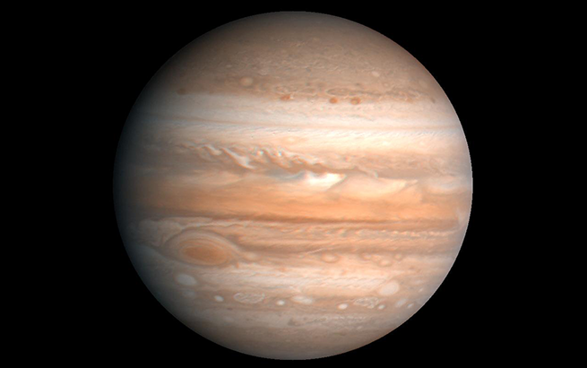

|
Since each of the worlds in our solar system has a different mass, each of these worlds also has a different gravitational level.
|
|
To describe the gravity on other worlds, we compare it with Earth's. We say that Earth's gravity is equal to 1.0. There's no reason that Earth's gravity has to be 1.0; scientists just picked that figure to be the standard that we use to compare the gravity of worlds.
|
|  |
Then we compare other worlds to Earth. A world with higher gravity would have a number higher than 1.0. For example, Jupiter's gravity level is 2.54, so its gravity is higher than Earth's – a little more than two and one-half times Earth’s. A world with lower gravity would have a number lower than 1.0. For example, when you read that Mars has a gravity level of .4, you konw that it has less than half of the gravitational pull that Earth has.
|